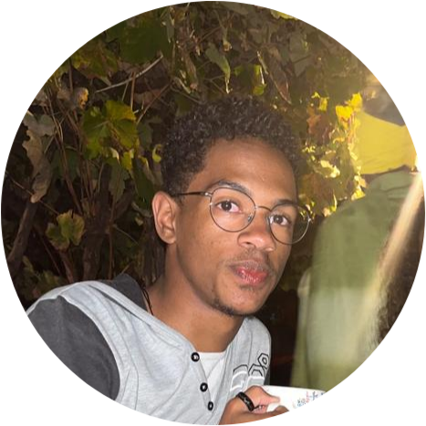

Minhas Redes Sociais
Quem sou eu?
Meu nome é Kelson de Sousa, tenho 17 anos de idade, nasci em 2007 no dia 08 de Janeiro, sou estudante do II Ciclo do Ensino Secundário no IMEL e faço o curso de Informática de Gestão. Neste momento terminei a 11ª classe e farei a 12ª no ano lectivo 2024/2025. Para este ano lectivo que se aproxima, espero estar mais focado naquilo que são os meus interesses acadêmicos, estar mais disciplinado para alcançar os meus objectivos ignorando qualquer tipo de distração, parando de procrastinar, não me importar com o nível de outras pessoas, porque afinal de contas não importa se elas estão ou não a fazer as coisas melhor do que eu, meu único concorrente sou eu, então o que os outros fazem ou param de fazer não deve me importar ou sequer mexer comigo!
Planeio me tornar um desenvolvedor Web Fullstack começando por aprender as tecnologias mais básicas e essenciais usadas no desenvolvimento web front-end, que são HTML, CSS, e JavaScript, em 3 meses eu devo me esforçar para adquirir o máximo de conhecimento nessas 3 tecnologias, sendo no final capaz de desenvolver sites e layouts mais robustos, visualmete bonitos, esteticamente bem planeados e montados e interativos. Nos próximos 3 meses aprenderei sobre Sistemas de Versionamento para poder versionar os meus projectos e organizá-los melhor, tornando-me assim um melhor desenvolvedor, aprendendo com outros desenvolvedores e seus códigos e contribuindo também para a comunidade dev expondo os meus projectos e assim ganhando mais visibilidade no mundo da programação, também estudarei sobre o framework ReactJS e a linguagem de programação PHP me aprofundando no desenvolvimento web backend.
Como falar comigo?
-
 /doctorscript08 - Segue-me no instagram para acompanhar os meus posts
/doctorscript08 - Segue-me no instagram para acompanhar os meus posts
-
 /doctorscript08 - Acessa o meu GitHub para veres os meus códigos
/doctorscript08 - Acessa o meu GitHub para veres os meus códigos